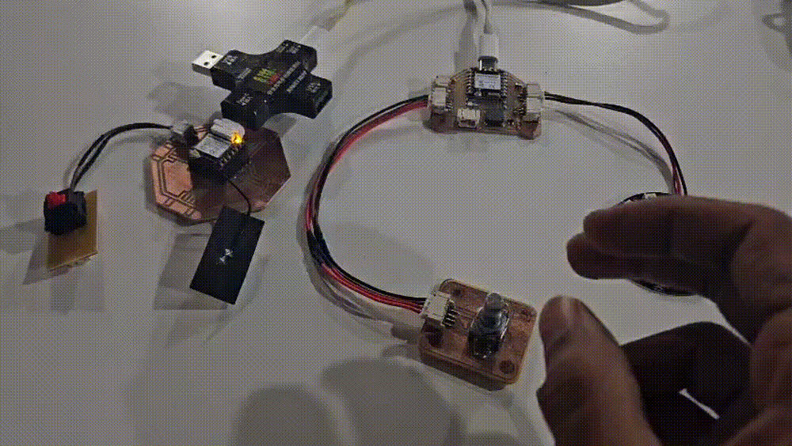
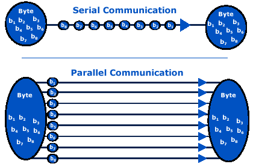
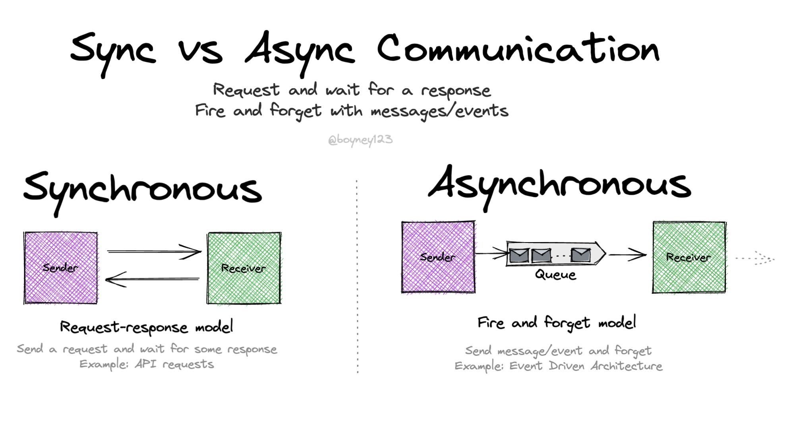
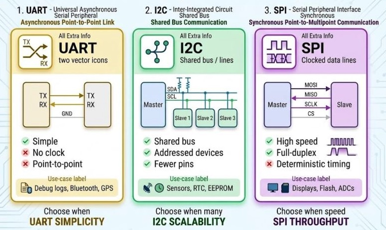
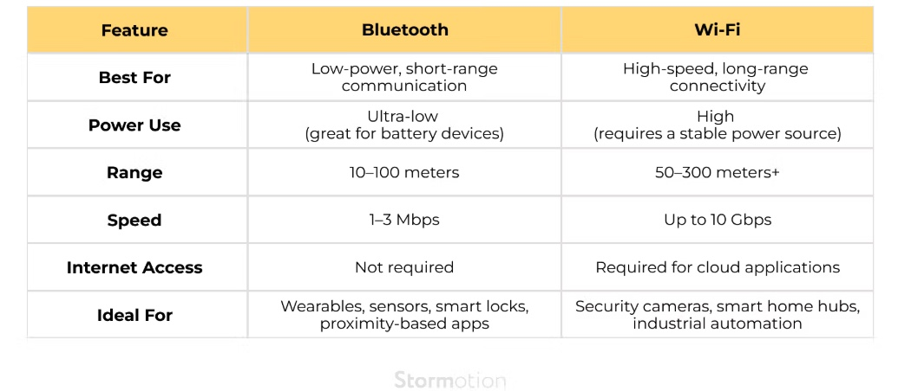
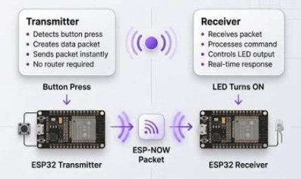
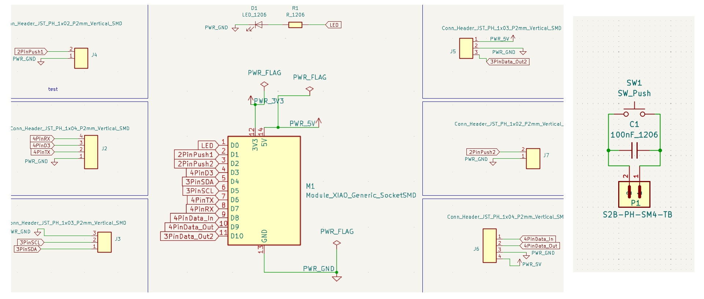
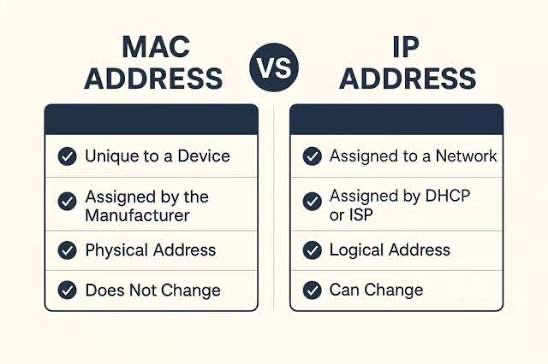
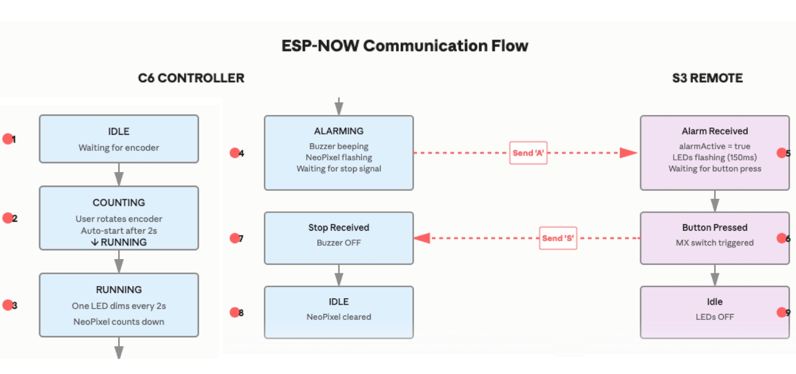

Networking and Communications
This week explores the fundamentals of networking and communication protocols, from basic serial communication to wireless systems, enabling microcontrollers to exchange data with each other and external systems.

Serial vs Parallel
Serial communication transmits data one bit at a time over a single wire, while parallel communication sends multiple bits simultaneously over multiple wires. Serial is slower but simpler and more reliable over longer distances due to reduced electromagnetic interference.
For microcontroller applications, serial communication is preferred because it requires fewer pins, lower power consumption, and better noise immunity. Parallel communication is used in situations requiring high bandwidth over short distances, such as internal bus communication.

Timing (Synchronous vs Asynchronous)
Synchronous communication uses a shared clock signal to coordinate data transmission. Both sender and receiver use the same clock to determine when to sample data, ensuring precise timing and higher data rates. Examples include SPI and I2C.
Asynchronous communication does not use a shared clock. Instead, both devices must agree on a baud rate (transmission speed) in advance. Start and stop bits frame the data to indicate when transmission begins and ends. UART is the most common asynchronous protocol.

Protocols - UART, I2C, SPI
UART (Universal Asynchronous Receiver/Transmitter) is the most common serial protocol, using two wires (TX and RX). It operates asynchronously at standard baud rates like 9600, 115200 bps. Simple but slower, ideal for short-range communication and debugging.
I2C (Inter-Integrated Circuit) uses two wires (SDA and SCL) and supports multiple devices on the same bus through addressing. Synchronous, slower than SPI (~400kHz), but requires fewer pins and supports hot-swapping devices. Ideal for sensor networks.
SPI (Serial Peripheral Interface) is the fastest, using four wires (MOSI, MISO, SCK, CS). Supports high speeds (up to 10MHz+), simple implementation, but point-to-point connections. Preferred for high-speed peripherals like SD cards and displays.

Wireless Systems - Wi-Fi and Bluetooth
Wi-Fi operates on the 2.4GHz and 5GHz bands, providing high bandwidth over medium distances (up to 100 meters). Wi-Fi requires more power and processing but offers broad compatibility with existing infrastructure. Ideal for applications needing internet connectivity.
Bluetooth (especially Bluetooth Low Energy / BLE) is designed for short-range, low-power communication (up to 240 meters in open space). BLE consumes significantly less power than Wi-Fi, making it ideal for battery-powered wearables and IoT devices. Range is shorter but power efficiency is superior.
Both protocols handle their own timing, error correction, and encryption, abstracting away complexity from the developer but consuming more power and microcontroller resources than simpler serial protocols.

ESP Now
ESP-NOW is a proprietary protocol developed by Espressif for direct, low-latency communication between ESP8266 and ESP32 microcontrollers without requiring a Wi-Fi router or internet connection.
It operates on the 2.4GHz band with data rates up to 250kbps and ranges up to 220 meters in open space. ESP-NOW requires minimal power compared to Wi-Fi, making it ideal for mesh networks and IoT applications. Multiple devices can communicate simultaneously, and the protocol handles encryption and delivery confirmation.
For the TimeWinder project, ESP-NOW could enable wireless communication between multiple countdown timers or between a timer and a control device, without the overhead of a full Wi-Fi connection.

1 / 3
Designing the Second Board
A Test Board was designed in KiCad using the XIAO ESP32 S3 microcontroller as the main hub. The board routes the ESP32 S3 pins to multiple JST connectors, allowing breakout boards, NeoPixel rings, encoders, and other peripherals to be connected as required.
A dedicated breakout board for the Cherry MX switch was created and connected to the main Test Board via a JST 2-pin power cable. This combination of Test Board and breakout board will be used to communicate with the output devices board from Week 10 (with XIAO ESP32 C6) using ESP-NOW protocol.

Finding MAC Address
Each microcontroller has a unique MAC (Media Access Control) address used for wireless identification. To find the MAC address for both the XIAO ESP32 C6 and XIAO ESP32 S3 boards, a simple test sketch is used with the following code:
void setup() {
Serial.begin(115200);
delay(1000);
Serial.println(WiFi.macAddress());
}
void loop() {
}Uploading this sketch to the board and opening the Serial Monitor at 115200 baud will print the MAC address in the format: AA:BB:CC:DD:EE:FF.
The MAC addresses for both boards needs to be saved for ESP-NOW communication setup, where each board must know the MAC address of the other board it will communicate with.

Communication Between the Boards
The system uses ESP-NOW for peer-to-peer wireless communication between two boards. The C6 controller waits for encoder input, then automatically starts a countdown after 2 seconds of inactivity—one NeoPixel LED dims every 2 seconds.
When the countdown reaches zero, C6 enters ALARMING state, activating the buzzer and sending an 'A' (alarm) message to S3. S3 receives this message and flashes its LEDs in sync.
When the user presses the MX button on S3, it sends an 'S' (stop) message back to C6. Upon receiving this signal, C6 stops the alarm and returns to IDLE, while S3 turns off its LEDs. Both boards then reset for the next cycle.
=== ESP-NOW Countdown Timer === 1. Rotate encoder to set duration (1-12) 2. Countdown starts after 2 seconds idle 3. Press MX switch on S3 to stop alarm [16:20:04] C6 MAC: 10:51:DB:1A:99:10 [16:20:06] Turns set: 1 [16:20:08] Turns set: 2 [16:20:10] Turns set: 3 [16:20:12] Turns set: 4 [16:20:13] Turns set: 5 [16:20:15] Starting countdown with 5 LEDs [16:20:17] LEDs remaining: 4 [16:20:19] LEDs remaining: 3 [16:20:21] LEDs remaining: 2 [16:20:23] LEDs remaining: 1 [16:20:25] All LEDs dimmed — ALARM! [16:20:25] Alarm sent to S3! [16:20:32] Stop signal from S3 — resetting! [16:20:32] Back to IDLE. Rotate encoder to start new countdown.
C6 Serial Monitor Output
- Startup shows instructions and MAC address
- Each encoder turn increments the duration
- After 2 seconds of no input, countdown starts automatically
- One LED dims every 2 seconds (DIM_INTERVAL)
- When all LEDs gone, alarm triggers and S3 message sent
- Stop signal received from S3 resets everything
=== ESP-NOW Alarm Remote === Waiting for alarm from C6... Press MX switch to stop alarm [16:20:04] S3 MAC: 30:30:F9:34:60:2C [16:20:04-16:20:25] (Waiting for C6 countdown...) [16:20:25] Alarm received from C6! Press MX switch to stop... [16:20:26] (LEDs flashing every 150ms) [16:20:27] (LEDs still flashing...) [16:20:28] (LEDs still flashing...) [16:20:29] (LEDs still flashing...) [16:20:30] (LEDs still flashing...) [16:20:31] (LEDs still flashing...) [16:20:32] ✓ Stop button pressed! Sending stop signal to C6...
S3 Serial Monitor Output
- Startup shows instructions and MAC address
- Waits silently while C6 is counting down
- When alarm message received from C6, confirms receipt
- LEDs flash every 150ms while alarm is active
- MX button press detected and stop signal sent
- No explicit "alarm stopped" message (S3 just turns LEDs off)
Programs for the Boards
XIAO ESP32 C6 - Controller
// XIAO ESP32-C6: Countdown Timer Controller with ESP-NOW
// State machine: IDLE → COUNTING → RUNNING → ALARMING → IDLE
#include <esp_now.h>
#include <WiFi.h>
#include <Adafruit_NeoPixel.h>
// ── MAC Address of XIAO ESP32-S3 (remote) ──
uint8_t peerMacAddress[] = {0x30, 0x30, 0xF9, 0x34, 0x60, 0x2C};
// ── Pins ────────────────────────────────────────────────
#define PIN_LED 22
#define PIN_BUZZ 17
#define PIN_A 1 // EC11 CLK
#define PIN_B 2 // EC11 DT
#define PIN_NEOPIXEL 18
#define NUM_LEDS 12
Adafruit_NeoPixel ring(NUM_LEDS, PIN_NEOPIXEL, NEO_GRB + NEO_KHZ800);
typedef struct {
char type; // 'A' = alarm start, 'S' = stop alarm
} Message;
enum State { IDLE, COUNTING, RUNNING, ALARMING };
State state = IDLE;
int lastA = 0;
int count = 0;
int pending = 0;
unsigned long lastPulse = 0;
const unsigned long GAP = 300;
int lit = 0;
unsigned long lastDim = 0;
const unsigned long DIM_INTERVAL = 2000;
unsigned long alarmStart = 0;
unsigned long lastBuzz = 0;
const unsigned long BUZZ_DURATION = 1000;
const unsigned long BUZZ_INTERVAL = 1500;
bool buzzerActive = false;
unsigned long lastFlash = 0;
const unsigned long FLASH_INTERVAL = 150;
void showRing(int n) {
ring.clear();
for (int i = 0; i < n; i++) {
ring.setPixelColor(i, ring.Color(0, 210, 160));
}
ring.show();
}
void setup() {
Serial.begin(115200);
pinMode(PIN_LED, OUTPUT);
pinMode(PIN_BUZZ, OUTPUT);
pinMode(PIN_A, INPUT_PULLUP);
pinMode(PIN_B, INPUT_PULLUP);
ring.begin();
ring.setBrightness(80);
ring.clear();
ring.show();
lastA = digitalRead(PIN_A);
WiFi.mode(WIFI_STA);
WiFi.disconnect();
if (esp_now_init() != ESP_OK) {
Serial.println("ESP-NOW init failed!");
while(1);
}
esp_now_register_recv_cb([](const esp_now_recv_info *info, const uint8_t *data, int data_len) {
onDataRecv(info, data, data_len);
});
esp_now_peer_info_t peerInfo = {};
memcpy(peerInfo.peer_addr, peerMacAddress, 6);
peerInfo.channel = 0;
peerInfo.encrypt = false;
if (esp_now_add_peer(&peerInfo) != ESP_OK) {
Serial.println("Failed to add peer");
while(1);
}
Serial.print("C6 MAC: ");
Serial.println(WiFi.macAddress());
}
void loop() {
if (state == IDLE || state == COUNTING) {
int currentA = digitalRead(PIN_A);
if (currentA != lastA) {
int dir = (digitalRead(PIN_B) != currentA) ? 1 : -1;
pending = dir;
lastPulse = millis();
}
lastA = currentA;
if (pending != 0 && millis() - lastPulse >= GAP) {
count += pending;
count = constrain(count, 0, NUM_LEDS);
pending = 0;
showRing(count);
digitalWrite(PIN_LED, HIGH);
delay(100);
digitalWrite(PIN_LED, LOW);
state = COUNTING;
}
}
if (state == COUNTING && millis() - lastPulse >= 2000) {
if (count > 0) {
lit = count;
state = RUNNING;
lastDim = millis();
}
}
if (state == RUNNING && millis() - lastDim >= DIM_INTERVAL) {
lastDim = millis();
lit--;
showRing(lit);
if (lit <= 0) {
state = ALARMING;
alarmStart = millis();
lastBuzz = millis();
lastFlash = millis();
buzzerActive = false;
Message msg;
msg.type = 'A';
esp_now_send(peerMacAddress, (uint8_t *)&msg, sizeof(msg));
tone(PIN_BUZZ, 2730);
buzzerActive = true;
}
}
if (state == ALARMING) {
unsigned long now = millis();
if (buzzerActive && (now - lastBuzz >= BUZZ_DURATION)) {
noTone(PIN_BUZZ);
buzzerActive = false;
lastBuzz = now;
} else if (!buzzerActive && (now - lastBuzz >= BUZZ_INTERVAL - BUZZ_DURATION)) {
tone(PIN_BUZZ, 2730);
buzzerActive = true;
lastBuzz = now;
}
if (now - lastFlash >= FLASH_INTERVAL) {
static bool flashState = false;
flashState = !flashState;
if (flashState) {
for (int i = 0; i < NUM_LEDS; i++) {
ring.setPixelColor(i, ring.Color(0, 210, 160));
}
} else {
ring.clear();
}
ring.show();
lastFlash = now;
}
}
}
void onDataRecv(const esp_now_recv_info *info, const uint8_t *data, int len) {
if (len != sizeof(Message)) return;
Message msg;
memcpy(&msg, data, sizeof(msg));
if (msg.type == 'S' && state == ALARMING) {
noTone(PIN_BUZZ);
ring.clear();
ring.show();
state = IDLE;
count = 0;
}
}
XIAO ESP32 S3 - Remote
// XIAO ESP32-S3: Remote Alarm Stop Control
// - Receives alarm signal from C6 → LED flashes
// - MX switch press → sends stop signal to C6 → stops alarm
#include <esp_now.h>
#include <WiFi.h>
// ── MAC Address of XIAO ESP32-C6 (main controller) ──
uint8_t peerMacAddress[] = {0x10, 0x51, 0xDB, 0x1A, 0x99, 0x10};
// ── Pins ────────────────────────────────────────────────
#define PIN_BUTTON 3 // Cherry MX switch on D2 (GPIO3)
#define PIN_LED 1 // External LED on D0 (GPIO1)
#define PIN_ONBOARD_LED 21 // Onboard LED (GPIO21)
typedef struct {
char type; // 'A' = alarm start, 'S' = stop alarm
} Message;
int lastButtonState = HIGH;
unsigned long lastButtonTime = 0;
unsigned long lastStopSignal = 0;
const unsigned long DEBOUNCE_TIME = 50;
const unsigned long STOP_COOLDOWN = 500;
bool alarmActive = false;
unsigned long lastLedFlash = 0;
const unsigned long LED_FLASH_INTERVAL = 150;
void setup() {
Serial.begin(115200);
pinMode(PIN_BUTTON, INPUT_PULLUP);
pinMode(PIN_LED, OUTPUT);
pinMode(PIN_ONBOARD_LED, OUTPUT);
digitalWrite(PIN_LED, LOW);
digitalWrite(PIN_ONBOARD_LED, LOW);
lastButtonState = digitalRead(PIN_BUTTON);
WiFi.mode(WIFI_STA);
WiFi.disconnect();
if (esp_now_init() != ESP_OK) {
Serial.println("ESP-NOW init failed!");
while(1);
}
esp_now_register_recv_cb([](const esp_now_recv_info *info, const uint8_t *data, int data_len) {
onDataRecv(info, data, data_len);
});
esp_now_peer_info_t peerInfo = {};
memcpy(peerInfo.peer_addr, peerMacAddress, 6);
peerInfo.channel = 0;
peerInfo.encrypt = false;
if (esp_now_add_peer(&peerInfo) != ESP_OK) {
Serial.println("Failed to add peer");
while(1);
}
Serial.print("S3 MAC: ");
Serial.println(WiFi.macAddress());
}
void loop() {
int buttonState = digitalRead(PIN_BUTTON);
if (buttonState == LOW && alarmActive && millis() - lastStopSignal >= STOP_COOLDOWN) {
Serial.println("Stop button pressed! Sending stop signal...");
Message msg;
msg.type = 'S';
esp_now_send(peerMacAddress, (uint8_t *)&msg, sizeof(msg));
alarmActive = false;
digitalWrite(PIN_LED, LOW);
digitalWrite(PIN_ONBOARD_LED, LOW);
lastStopSignal = millis();
}
lastButtonState = buttonState;
if (alarmActive) {
unsigned long now = millis();
if (now - lastLedFlash >= LED_FLASH_INTERVAL) {
static bool ledState = false;
ledState = !ledState;
digitalWrite(PIN_LED, ledState ? HIGH : LOW);
digitalWrite(PIN_ONBOARD_LED, ledState ? HIGH : LOW);
lastLedFlash = now;
}
} else {
digitalWrite(PIN_ONBOARD_LED, LOW);
}
}
void onDataRecv(const esp_now_recv_info *info, const uint8_t *data, int len) {
if (len != sizeof(Message)) return;
Message msg;
memcpy(&msg, data, sizeof(msg));
if (msg.type == 'A') {
Serial.println("Alarm received! Press MX switch to stop...");
alarmActive = true;
lastLedFlash = millis();
}
}